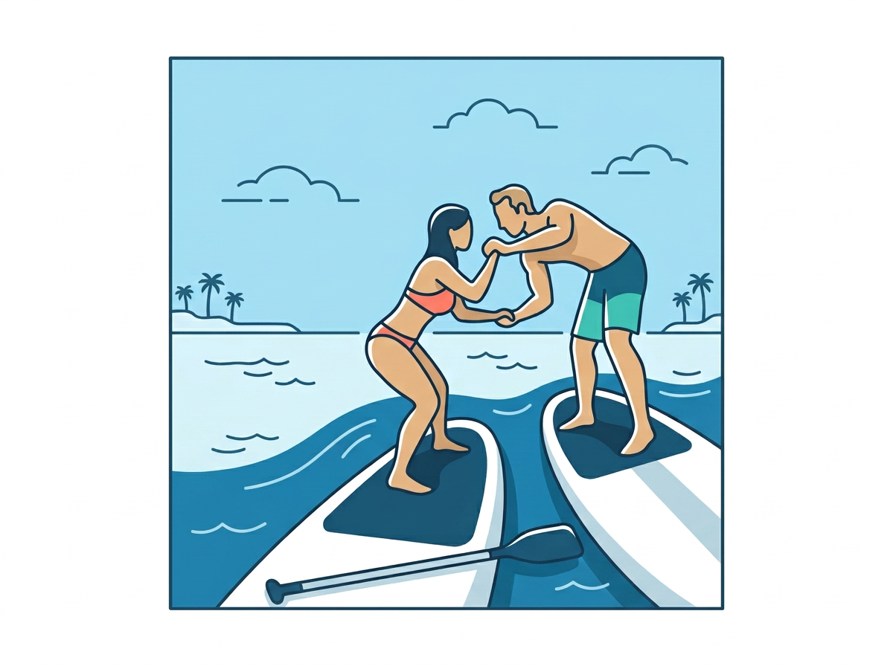
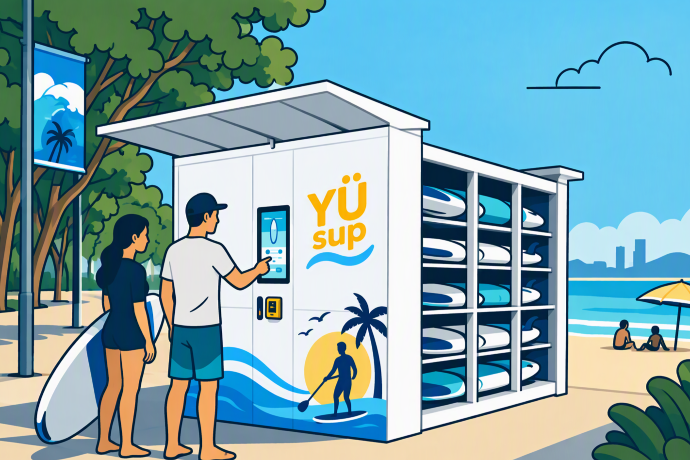
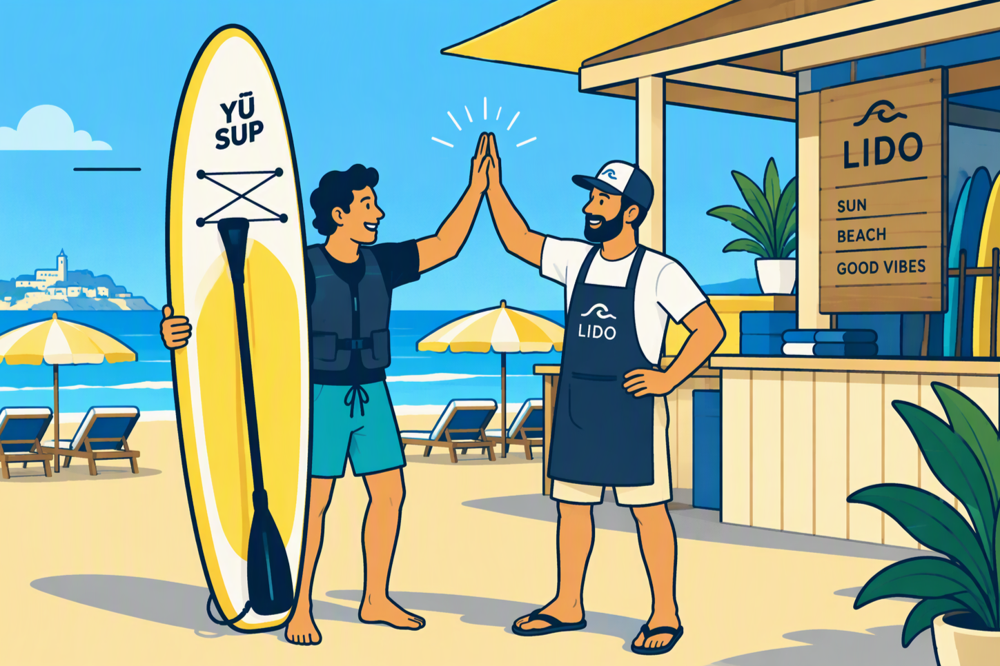

FIND IT.
Head to the YÜ station at the beach and get ready.

Arrive by the sea. Feel like a paddle.
No equipment to carry. No planning ahead.
That’s the idea behind YÜ.
A break from the everyday. A paddle with your people. That moment when you think: let’s just go.
YÜ makes SUP rental simple and self-service. Find a station, use your phone and get ready to enjoy the water.
HERE’S HOW →
Three simple steps.
More time for the good part.

Head to the YÜ station at the beach and get ready.

Open the YÜ app. Follow the steps on your phone to book, pay and unlock your SUP.

Grab your board and accessories. Enjoy the ride.

We partner with beach clubs to bring self-service SUP experiences to the shore. We provide the technology and infrastructure. You provide the perfect location.
BECOME A PARTNER ↗We provide the technology, equipment and infrastructure to bring YÜ to your location.
Give your guests another way to make the most of their time by the sea.
Designed to operate independently, keeping day-to-day involvement from your team to a minimum.
Unlock a new revenue stream while adding more value to every guest experience.
Have a question, or the perfect spot for YÜ?
Drop us an email or get in touch on WhatsApp.